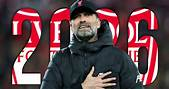

Liverpool will be without Roberto Firmino once more when they go to Newcastle in the Premier League on Saturday.
The Brazilian has been out with a foot injury, missing the Reds' last three games, and has yet to return to training.

“Bobby, it is not a serious injury, we are all still kind of convinced, but it takes now a little bit longer already than we all thought, especially Bobby thought as well,” Jurgen Klopp said on Friday. “He will not be ready for tomorrow"
Curtis Jones and Kostas Tsimikas were both ruled out of Wednesday's 2-0 win over Villarreal and the Champions League due to illness. The Greek defender returned to training on Thursday, but Jones is still questionable.ss In other news, given the short break from the Villarreal game, the German is expected to reshuffle his squad. Diogo Jota, Naby Keita, and Joel Matip are all expected to start, but Joe Gomez might push for a spot if Klopp decides Trent Alexander-Arnold needs a rest.
Liverpool manager Jurgen Klopp signs contract extension to keep him at the club until 2026
In the previous month, the German had begun to be questioned about his future as he approached the end of his contract, especially with a number of senior players' contracts up for renewal next summer, such as Mohamed Salah. Nonetheless, the agreement's pace and timing – as well as extensions for important assistants Pep Lijnders and Peter Krawietz – came as a surprise. The arrival of Mike Gordon, president of owners Fenway Sports Group, from America for the Champions League semi-final first-leg triumph against Villarreal was the first indication that anything was up.